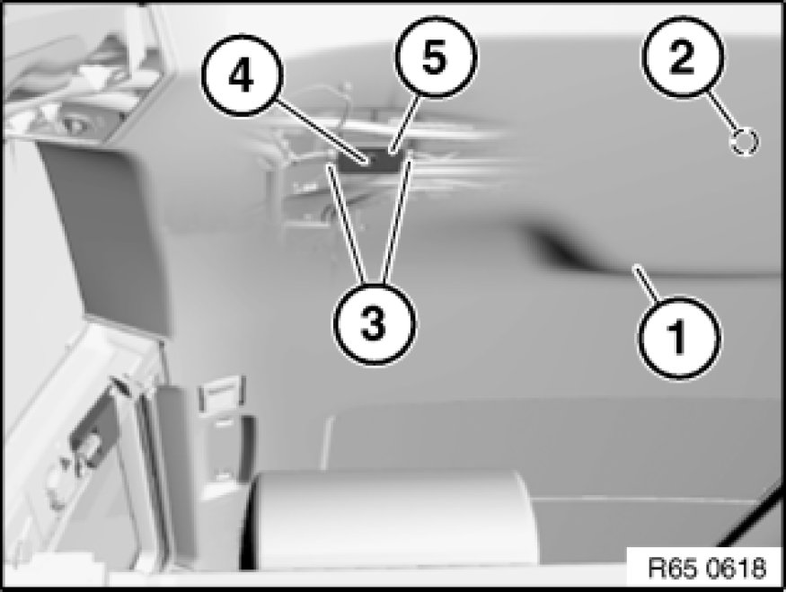

Removing and Installing/Replacing Suppression Filter
65 20 350 - Removing and installing/replacing suppression filter

Necessary preliminary tasks:
- Remove rear grab handles 51 16 450 Removing and Installing/Replacing Rear Left/Right Grab Handle
- Remove trim for rear left and right roof pillar (C-pillar) Removing and Installing/Replacing Trim Panel for Rear Left or Right Roof Pillar
- Remove trim for rear left and right roof pillar (D-pillar) Pillar Trim
- Remove left and right interior lights Removing and Installing/Replacing Left or Right Interior Light (Side)
- Detach mucket in area of roofliner

Important!
Do not under any circumstance kink roofliner (1).
Unclip roofliner (1) at retaining point (2) towards bottom and lower.
Unlock plug connections (3) and disconnect.
Release screw (4) and remove suppression filter (5).